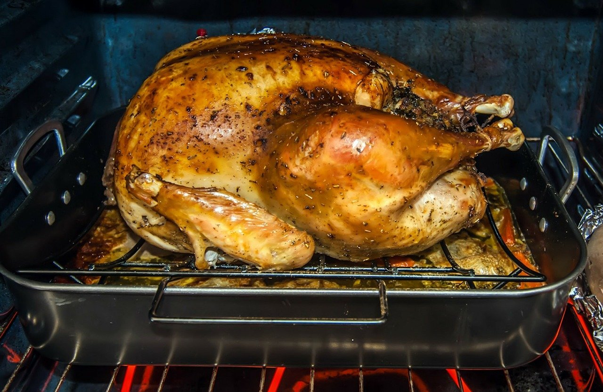

Herb-Glazed Roasted Turkey

Roasted Turkey Perfect for Thanksgiving!
The holiday season means it's Turkey Time. I could never figure out why so many people wanted to come over...until
they confessed it was my recipe for turkey! Gobble, Gobble! I do not stuff
the turkey. I make my own stuffing on the side and serve in a festive
dish.
Ingredients
- 1 (16 pound) whole turkey, neck and giblets removed
- 1/4 cup extra-virgin olive oil
- 2 teaspoon salt
- 1 1/2 teaspoon ground black pepper
- 1 teaspoon ground thyme
- 1 cup honey
- 1/2 cup melted butter
- 2 teaspoons dried sage leaves
- 1 tablespoon minced fresh parsley
- 1 teaspoon dried basil
Cooking Directions
-
Preheat oven to 325 degrees F (165 degrees C). Rinse the turkey, and pat
thoroughly dry with paper towels. Brush the turkey with olive oil,
inside and out.
-
Mix 1 teaspoon of salt, 1/2 teaspoon of pepper, and the thyme in a small
bowl, and sprinkle the turkey with the mixture.
-
Place the turkey on a rack set in a roasting pan, and roast in the
preheated oven for 2 hours.
-
In a bowl, stir together the honey, melted butter, sage, parsley, basil,
1 teaspoon salt, and 1 teaspoon pepper, until the mixture is smooth and
well blended. Brush the turkey with the honey glaze, and return to the
oven.
-
Roast the turkey until no longer pink at the bone and the juices run
clear, about 2 more hours. An instant-read thermometer inserted into the
thickest part of the thigh, near the bone should read 180 degrees F (82
degrees C). Continue to brush the turkey with the honey glaze frequently
as it roasts. Remove the turkey from the oven, cover with a doubled
sheet of aluminum foil, and allow to rest in a warm area 10 to 15
minutes before slicing.
Back To The Top
Back To Homepage